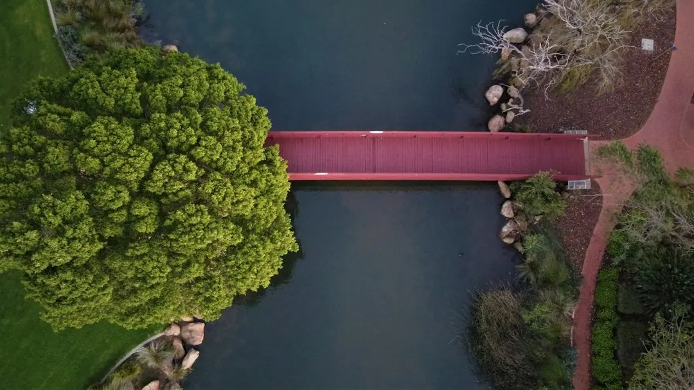

A Perth landscaping project is shaped by sandy soil, summer heat, water supply, access, levels and the amount of paving or retaining required. Garden makeovers, turf, reticulation, paving and retaining walls each need different preparation. Before comparing quotes, record the suburb, rough area, slope, access, shade, existing trees and whether watering uses bore or scheme supply. Ask how soil will be improved, how reticulation will be zoned, and whether retaining or council approvals need checking.
For homeowners comparing landscaping services perth options, the useful starting point is to match the proposed work with the block's soil, access, levels, water supply and intended use.
Landscaping Services Perth Explained
Landscapers Perth describes Perth gardens as projects shaped by sandy ground, summer conditions and local water rules. Those factors affect bed preparation, turf selection, paving bases and the way irrigation is divided between lawns and garden beds.
Before requesting a quote, note the rough area, property access, slope, shade, existing trees and water source. A flat block with clear machinery access presents a different planning problem from a sloping site where retaining may be needed first. The same distinction applies to a bare builder's-sand block compared with an established garden that needs removal and repair.
Ask the contractor to identify site preparation separately from visible finishes. Soil conditioner or organic matter may be needed before planting, while paving needs a firm, well-drained and compacted base. A quote that combines these items into one broad allowance is harder to compare than one showing what preparation is included.
Choose the service around the finished use
The right service depends on what the garden must do. Landscape design is useful when the layout, planting areas and hard surfaces need to be planned before construction is priced. Garden landscaping suits a broader makeover involving beds, turf, plants, mulch and edging.
For a lawn project, compare new turf with artificial grass according to the desired appearance, maintenance approach and site conditions. New turf needs prepared sand and grass selected for the available sun, shade and watering. Reticulation should be designed before turf, paving and mulch are installed, with separate zones considered for lawns and beds.
- Choose design first when the layout is still unsettled.
- Specify turf, beds, mulch and edging when the garden is being rebuilt.
- Plan reticulation before finished surfaces cover pipe routes.
- Use paving and hardscaping for paths, patios, pool surrounds or entertaining areas.
Handle slopes, boundaries and approval questions
Retaining is a separate decision from ordinary garden edging. Sloping or sandy Perth blocks may need limestone or block walls to hold levels, and a boundary position can introduce questions about neighbours, permits and engineering. The practical step is to describe the wall's location, purpose and proposed material before the quote is finalised.
Local council requirements should be checked for the particular site rather than assumed from a general landscaping article. Ask who is responsible for any permit or engineering information, and confirm how a shared boundary will be discussed with the adjoining owner. These questions are especially relevant where the wall changes levels or sits close to a boundary.
Suburb conditions can alter the planning conversation. Coastal locations such as Cottesloe and Scarborough may involve salt wind, Kalamunda is associated with hills and slopes, and newer estates around Baldivis or Ellenbrook may begin with bare builder's sand. Use the location to prompt a site question, not as a substitute for inspection.
Compare quotes line by line
Price differences are easier to understand when every quote uses the same scope. Check whether removal, soil improvement, levels, access, materials, drainage assumptions, reticulation zones and final clean-up are included. Hardscape-heavy work may be priced differently from planting and turf because the preparation and materials are different.
Construction work is generally quoted as a whole job, while hourly pricing is more suited to garden maintenance and small tidy-ups. Maintenance needs can rise with spring growth and summer reticulation checks, so ask how visit length and frequency would change across the seasons.
For larger projects, request a written sequence from design and site preparation through to retaining, irrigation, paving, planting and turf. The sequence helps identify clashes, such as laying reticulation after a path is finished or installing turf before the soil has been improved.
For a separate discussion of the budgeting factors, see the Perth landscaping costs guide.
Prepare a useful enquiry
A detailed enquiry gives the estimator something practical to assess. Include the suburb, job type, rough size, access details and any photos or plans. State whether the project is a complete makeover, lawn installation, artificial grass, paving, retaining or reticulation, and identify anything that must remain.
Before accepting a quote, ask which licences and insurance apply to the proposed work and request current certificates. A Perth garden project may combine landscaping with reticulation, retaining or other specialist work, so confirm who handles each part and whether the quoted scope identifies those responsibilities.
Use the following checks when comparing responses:
- Does the quote describe the ground preparation?
- Are materials and quantities clear enough to compare?
- Does the irrigation plan distinguish lawns from garden beds?
- Are slope, boundary and approval questions addressed?
- Does the proposed order protect finished paving, mulch and turf?
- Define the job. Choose the main outcome, such as a makeover, lawn, paving, retaining or reticulation, and record the rough area.
- Inspect the block. Note access, slope, shade, existing trees and whether the garden uses bore or scheme water.
- Check preparation. Ask how sand, levels, paving bases, irrigation routes and retaining needs will be handled.
- Compare like for like. Request quotes that list the same preparation, materials, finishes and sequencing.
| Decision | What changes | Question to ask |
|---|---|---|
| New turf or artificial grass | Watering, preparation and ongoing care | What suits the site's sun, shade and watering conditions? |
| Limestone or block retaining | Material choice, levels and boundary discussion | Are permits or engineering checks needed for this wall? |
| Bore or scheme water | Reticulation design and zoning | How will lawns and garden beds be separated? |
| Design or full makeover | Planning stage versus construction scope | Which layout, planting and hard-surface items are included? |
Common questions
Why can two Perth landscaping quotes differ so much? The scope may include different allowances for access, soil preparation, levels, materials, paving, retaining or irrigation. Compare each line rather than comparing only the final total.
Should reticulation be installed before turf and paving? The published guidance recommends laying reticulation before turf, paving and mulch. Ask for the zones and controller arrangement before finished surfaces are installed.
What should I ask about a retaining wall? Ask whether limestone or block construction is proposed, how the wall relates to the slope or boundary, and whether local council permits or engineering information need checking.
What information belongs in a landscaping enquiry? Include the suburb, job type, rough size, access details and any available photos or plans. Also mention the water source, slope, shade and existing trees.
This guide covers Perth garden planning, service choices, site preparation, quote comparisons, reticulation, turf, paving and retaining questions.